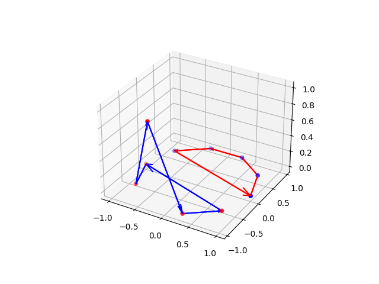

%20component.png)


The Linkage algorithm can only distinguish between the two-component unlink and the two-component Hopf link. On the other hand, the n_component_HELICITY algorithm is a more generalized version of the former. It has the capability to differentiate between various 'n' component Hopf rings, where 'n' can be 2, 3, 4, 5, 6, and so forth. Each of these links is generated from a dataset of discrete points.